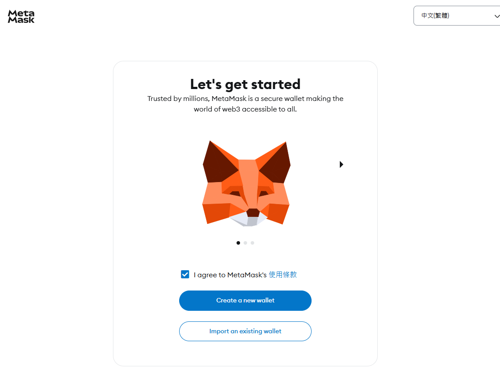
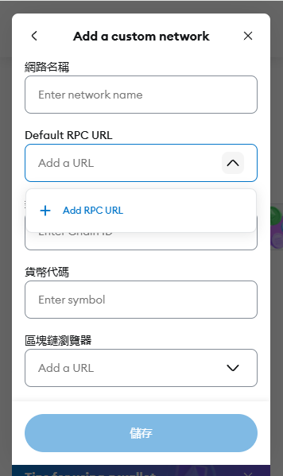
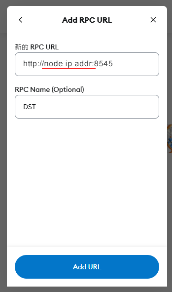
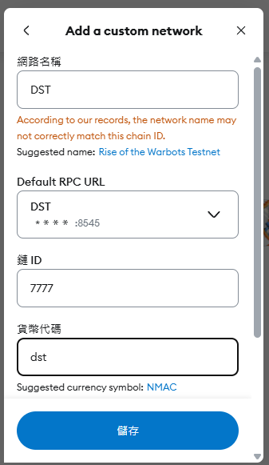
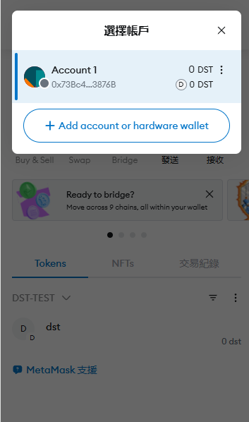
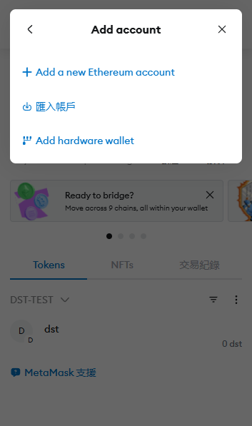
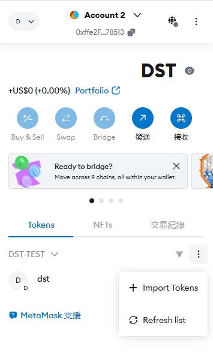
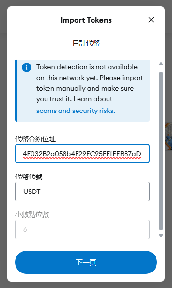

MetaMask操作指南
一、設定錢包帳戶

選項A：創建新錢包
- 點擊 「Create a new wallet」
- 設定一組 高強度密碼（需包含大小寫字母、數字與符號）
- 備份助記詞
- 系統會提供 12個英文單字的助記詞，需手抄於紙本並妥善保管
- ⚠️ 嚴禁截圖或儲存於雲端，避免遭駭客竊取
- 依序驗證助記詞順序，完成錢包創建
選項B：導入現有錢包
- 點擊 「import on existing wallet」
- 輸入 助記詞或私鑰 以恢復原有資產
二、功能操作指南
基本功能
| 功能 | 操作方式 |
|---|---|
| 接收資產 | 點擊「帳戶」複製錢包地址，或顯示QR碼供他人掃描 |
| 發送資產 | 輸入接收地址與金額，確認Gas費用後執行交易 |
| 切換網路 | 點擊網路名稱（預設為Ethereum Mainnet），可添加自訂區塊鏈（如BSC、Polygon） |
網絡管理

1、點擊左上角切換網路，可切換至其他區塊鏈（如BSC、ETH）
2、添加自定義網絡，點擊 「Add a network」，輸入網絡名稱、RPC URL、鏈ID、幣種等資訊

3、點擊 「Add RPC URL」 添加自定義RPC URL（虛擬機的rpc地址格式為 http://ip:8545 或 https://ip:8545）

4、輸入鏈名稱、ID、幣種、RPC URL後，點擊 「儲存」 完成添加 
賬號管理
1、點擊 「帳戶」 進入帳戶管理頁面,可以切換不同的錢包賬戶

2、點擊 「Add account or hardware wallet」 導入或創建新的錢包賬戶

3、點擊 「匯入賬戶」 輸入錢包私鑰導入已有的錢包
代幣管理
1、在token標籤頁面中可以添加合約代幣信息，點擊 「Import token」 進入添加代幣頁面

2、輸入代幣合約地址,如果合約存在則會自動顯示代幣信息

3、點擊 「匯入」 完成添加，即可顯示自訂ERC-20代幣
進階應用
- 連接DApps：訪問Uniswap、OpenSea等平台時，MetaMask會自動彈出授權視窗
三、安全注意事項
- 定期檢查插件更新
至Chrome線上應用商店確認是否為最新版本 - 啟用雙重驗證
可搭配硬體錢包（如Ledger）提升安全性 - 辨識釣魚網站
避免在非官方頁面輸入助記詞或私鑰
📌 小技巧：若無法訪問Chrome線上應用商店，可透過GitHub下載CRX檔案手動安裝5
🔗 官方資源：MetaMask支援中心